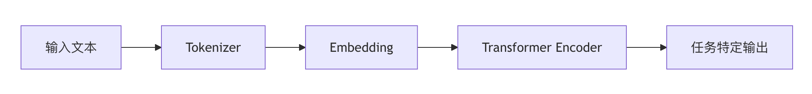
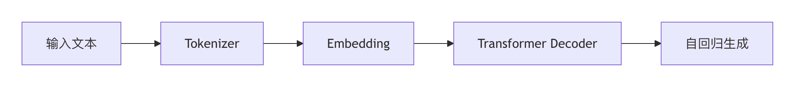
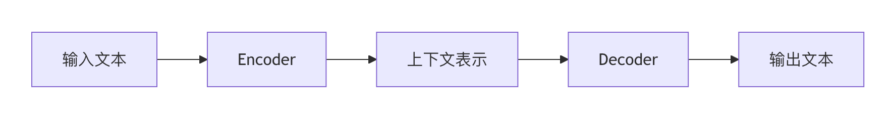

事前学習モデル
事前学習モデル（Pre-trained Models）は、自然言語処理（NLP）分野において近年最も重要な技術的進歩の一つです。このようなモデルは、大規模なテキストデータで事前に学習し、汎用的な言語表現能力を獲得した上で、特定のタスクに合わせてファインチューニング（Fine-tuning）できます。
核心理念
- 2段階学習：大規模な汎用データで学習し、その後小規模な特定タスクデータでファインチューニングする
- 転移学習：汎用言語知識を特定タスクに転移する
- パラメータ共有：同じモデルパラメータを複数の下流タスクに利用できる
従来手法との比較
| 特徴 | 従来のNLPモデル | 事前学習モデル |
|---|---|---|
| データ要件 | 大量のラベル付きデータが必要 | 少量のラベル付きデータで済む |
| 学習方法 | ゼロから学習 | 事前学習＋ファインチューニング |
| 汎化能力 | タスク特化 | タスク横断的に汎用 |
| 開発効率 | 低 | 高 |
事前学習モデルの発展の歴史
1. 単語埋め込み時代（2013-2017）
- 代表モデル：Word2Vec、GloVe、FastText
- 特徴：
- 静的単語ベクトル表現
- 多義語を処理できない
- 文脈非依存
実例
# Word2Vecの例
from gensim.models import Word2Vec
sentences = [["自然", "言語", "処理"], ["事前学習", "モデル", "とても強力"]]
model = Word2Vec(sentences, vector_size=100, window=5, min_count=1)
print(model.wv["自然"]) # 単語ベクトルの出力
from gensim.models import Word2Vec
sentences = [["自然", "言語", "処理"], ["事前学習", "モデル", "とても強力"]]
model = Word2Vec(sentences, vector_size=100, window=5, min_count=1)
print(model.wv["自然"]) # 単語ベクトルの出力
2. 文脈認識時代（2018-2019）
- 代表モデル：ELMo、ULMFiT
- ブレークスルー：
- 動的単語ベクトル表現
- 多義語を処理できる
- 双方向言語モデル
3. Transformer時代（2019〜現在）
- マイルストーンモデル：BERT、GPT、T5
- 革命的な改良：
- Transformerアーキテクチャに基づく
- 大規模な事前学習
- 強力な転移学習能力
主流の事前学習モデルアーキテクチャ

1. Encoderアーキテクチャ（BERTシリーズ）

- 特徴：
- 双方向の文脈理解
- 分類や質問応答などのタスクに適している
- 代表モデル：BERT、RoBERTa、ALBERT
2. Decoderアーキテクチャ（GPTシリーズ）

- 特徴：
- 単方向の文脈（左から右）
- テキスト生成が得意
- 代表モデル：GPT-3、GPT-4
3. Encoder-Decoderアーキテクチャ

- 特徴：
- シーケンス・ツー・シーケンスタスクに適している
- 代表モデル：T5、BART
事前学習タスクの種類
1. 言語モデル（LM）
- 目的：次の単語を予測する
- 公式：P(w_t | w_1, ..., w_{t-1})
2. マスク言語モデル（MLM）
- 例：
- 元の文：「事前学習モデルはとても強力だ」
- マスク後：「事前学習[MASK]はとても強力だ」
- モデルの予測：「モデル」
3. 次文予測（NSP）
- 判定2つの文が連続しているかどうか
- 正例：
- 文A：「事前学習モデルはとても強力だ」
- 文B：「それらは多様なNLPタスクを処理できる」
- 負例：
- 文A：「事前学習モデルはとても強力だ」
- 文B：「今日は天気が本当にいい」
- 正例：
4. その他のタスク
- トークン置換検出（RTD）
- 文順序予測（SOP）
事前学習モデルの使い方
1. Hugging Face Transformersを使用
実例
from transformers import pipeline
# 感情分析の例
classifier = pipeline("sentiment-analysis")
result = classifier(「事前学習モデルは本当に素晴らしい！」)
print(result) # [{'label': 'POSITIVE', 'score': 0.9998}]
# 感情分析の例
classifier = pipeline("sentiment-analysis")
result = classifier(「事前学習モデルは本当に素晴らしい！」)
print(result) # [{'label': 'POSITIVE', 'score': 0.9998}]
2. モデルファインチューニングの流れ
- 事前学習モデルを読み込む
- タスク固有のデータセットを準備する
- タスク固有の出力層を追加する
- ファインチューニング学習
実例
from transformers import BertForSequenceClassification, Trainer
model = BertForSequenceClassification.from_pretrained("bert-base-chinese")
# 学習データを準備...
trainer = Trainer(model=model, args=training_args, train_dataset=train_dataset)
trainer.train()
model = BertForSequenceClassification.from_pretrained("bert-base-chinese")
# 学習データを準備...
trainer = Trainer(model=model, args=training_args, train_dataset=train_dataset)
trainer.train()
3. 主要パラメータの説明
| パラメータ | 説明 | 典型的な値 |
|---|---|---|
| learning_rate | 学習率 | 2e-5 |
| batch_size | バッチサイズ | 16/32 |
| num_train_epochs | エポック数 | 3-5 |
| max_length | 最大シーケンス長 | 512 |
事前学習モデルの応用シーン
1. テキスト分類
- 感情分析
- スパムメール検出
- トピック分類
2. 質問応答システム
- 抽出型質問応答
- オープンドメイン質問応答
3. テキスト生成
- 要約生成
- 対話システム
- コンテンツ作成
4. その他の応用
- 固有表現認識（NER）
- 機械翻訳
- テキスト類似度計算
実践的なアドバイス
モデル選択：
- 分類タスクではBERT系モデルを優先する
- 生成タスクではGPT系モデルを選択する
- リソースが限られている場合は蒸留モデル（例：DistilBERT）を検討する
リソース管理：
- GPUメモリ不足の場合はbatch_sizeを小さくする
- 長文処理ではmax_lengthの制限に注意する
- モデル量子化技術の使用を検討する
性能最適化：
- 学習率は細かく調整する必要がある
- 早期停止（Early Stopping）で過学習を防ぐ
- さまざまなオプティマイザ（AdamWなど）を試す
継続的な学習：
- Hugging Faceコミュニティをフォローする
- arXivの最新論文を追う
- オープンソースプロジェクトへの参加・実践
将来の発展方向
- より大規模に：モデルパラメータが増え続ける（例：GPT-4の兆パラメータ）
- マルチモーダル融合：テキストと画像、音声の融合
- エネルギー効率の最適化：より効率的な学習と推論の方法
- ドメイン適応：専門分野向けの事前学習モデル
- 倫理と安全性：偏見や有害性などの問題を解決する
事前学習モデルはNLP分野の技術的構図を再形成しています。その核心理念を理解し、応用方法を習得することは、NLPエンジニアにとって必須のスキルになるでしょう。
その他の拡張
クリックしてノートを共有
ノートは本記事の内容を拡張したものである必要があります！
記事の投稿は、ここをクリックしてください
登録招待コードの取得方法
ノートを共有する前にログインする必要があります！
登録招待コードの取得方法